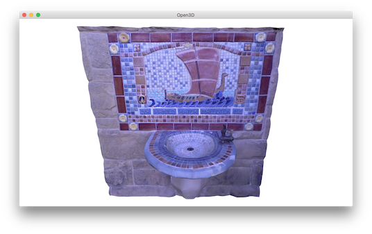

Color Map Optimization¶
Consider color mapping to the geometry reconstructed from depth cameras. As color and depth frames are not perfectly aligned, the texture mapping using color images is subject to results in blurred color map. Open3D provides color map optimization method proposed by [Zhou2014]. Before begin, download fountain dataset from here. The following script shows an example of color map optimization.
5 6 7 8 9 10 11 12 13 14 15 16 17 18 19 20 21 22 23 24 25 26 27 28 29 30 31 32 33 34 35 36 37 38 39 40 41 42 43 44 45 46 47 48 49 50 51 52 53 54 55 56 57 58 59 60 61 62 63 64 65 | # examples/Python/Advanced/o3d.color_map.color_map_optimization.py
import open3d as o3d
from trajectory_io import *
import os, sys
sys.path.append("../Utility")
from file import *
path = "[path_to_fountain_dataset]"
debug_mode = False
if __name__ == "__main__":
o3d.utility.set_verbosity_level(o3d.utility.VerbosityLevel.Debug)
# Read RGBD images
rgbd_images = []
depth_image_path = get_file_list(os.path.join(path, "depth/"),
extension=".png")
color_image_path = get_file_list(os.path.join(path, "image/"),
extension=".jpg")
assert (len(depth_image_path) == len(color_image_path))
for i in range(len(depth_image_path)):
depth = o3d.io.read_image(os.path.join(depth_image_path[i]))
color = o3d.io.read_image(os.path.join(color_image_path[i]))
rgbd_image = o3d.geometry.RGBDImage.create_from_color_and_depth(
color, depth, convert_rgb_to_intensity=False)
if debug_mode:
pcd = o3d.geometry.PointCloud.create_from_rgbd_image(
rgbd_image,
o3d.camera.PinholeCameraIntrinsic(
o3d.camera.PinholeCameraIntrinsicParameters.
PrimeSenseDefault))
o3d.visualization.draw_geometries([pcd])
rgbd_images.append(rgbd_image)
# Read camera pose and mesh
camera = o3d.io.read_pinhole_camera_trajectory(
os.path.join(path, "scene/key.log"))
mesh = o3d.io.read_triangle_mesh(
os.path.join(path, "scene", "integrated.ply"))
# Before full optimization, let's just visualize texture map
# with given geometry, RGBD images, and camera poses.
option = o3d.color_map.ColorMapOptimizationOption()
option.maximum_iteration = 0
o3d.color_map.color_map_optimization(mesh, rgbd_images, camera, option)
o3d.visualization.draw_geometries([mesh])
o3d.io.write_triangle_mesh(
os.path.join(path, "scene", "color_map_before_optimization.ply"), mesh)
# Optimize texture and save the mesh as texture_mapped.ply
# This is implementation of following paper
# Q.-Y. Zhou and V. Koltun,
# Color Map Optimization for 3D Reconstruction with Consumer Depth Cameras,
# SIGGRAPH 2014
option.maximum_iteration = 300
option.non_rigid_camera_coordinate = True
o3d.color_map.color_map_optimization(mesh, rgbd_images, camera, option)
o3d.visualization.draw_geometries([mesh])
o3d.io.write_triangle_mesh(
os.path.join(path, "scene", "color_map_after_optimization.ply"), mesh)
|
Input¶
19 20 21 22 23 24 25 26 27 28 29 30 31 32 33 34 35 36 37 38 | # Read RGBD images
rgbd_images = []
depth_image_path = get_file_list(os.path.join(path, "depth/"),
extension=".png")
color_image_path = get_file_list(os.path.join(path, "image/"),
extension=".jpg")
assert (len(depth_image_path) == len(color_image_path))
for i in range(len(depth_image_path)):
depth = o3d.io.read_image(os.path.join(depth_image_path[i]))
color = o3d.io.read_image(os.path.join(color_image_path[i]))
rgbd_image = o3d.geometry.RGBDImage.create_from_color_and_depth(
color, depth, convert_rgb_to_intensity=False)
if debug_mode:
pcd = o3d.geometry.PointCloud.create_from_rgbd_image(
rgbd_image,
o3d.camera.PinholeCameraIntrinsic(
o3d.camera.PinholeCameraIntrinsicParameters.
PrimeSenseDefault))
o3d.visualization.draw_geometries([pcd])
rgbd_images.append(rgbd_image)
|
This script reads color and depth image pairs and makes rgbd_image. Note that convert_rgb_to_intensity flag is False. This is to preserve 8-bit color channels instead of using single channel float type image.
It is always good practice to visualize RGBD image before applying it to color map optimization. debug_mode switch is for visualizing RGBD image.
40 41 42 43 44 | # Read camera pose and mesh
camera = o3d.io.read_pinhole_camera_trajectory(
os.path.join(path, "scene/key.log"))
mesh = o3d.io.read_triangle_mesh(
os.path.join(path, "scene", "integrated.ply"))
|
The script reads camera trajectory and mesh.
46 47 48 49 50 51 52 53 | # Before full optimization, let's just visualize texture map
# with given geometry, RGBD images, and camera poses.
option = o3d.color_map.ColorMapOptimizationOption()
option.maximum_iteration = 0
o3d.color_map.color_map_optimization(mesh, rgbd_images, camera, option)
o3d.visualization.draw_geometries([mesh])
o3d.io.write_triangle_mesh(
os.path.join(path, "scene", "color_map_before_optimization.ply"), mesh)
|
To visualize how the camera poses are not good for color mapping, this script intentionally set the iteration number as 0, which means no optimization. color_map_optimization paints a mesh using corresponding RGBD images and camera poses. Without optimization, the texture map is blurred.
{kind=link}
{kind=link}
Rigid Optimization¶
The next step is to optimize camera poses to get a sharp color map.
55 56 57 58 59 60 61 62 63 64 65 | # Optimize texture and save the mesh as texture_mapped.ply
# This is implementation of following paper
# Q.-Y. Zhou and V. Koltun,
# Color Map Optimization for 3D Reconstruction with Consumer Depth Cameras,
# SIGGRAPH 2014
option.maximum_iteration = 300
option.non_rigid_camera_coordinate = True
o3d.color_map.color_map_optimization(mesh, rgbd_images, camera, option)
o3d.visualization.draw_geometries([mesh])
o3d.io.write_triangle_mesh(
os.path.join(path, "scene", "color_map_after_optimization.ply"), mesh)
|
The script sets maximum_iteration = 300 for actual iterations. The optimization displays the following energy profile.
[ColorMapOptimization] :: Rigid Optimization
[Iteration 0001] Residual error : 21639.276499 (avg : 0.004615)
[Iteration 0002] Residual error : 21461.765357 (avg : 0.004577)
[Iteration 0003] Residual error : 21284.579715 (avg : 0.004540)
:
[Iteration 0298] Residual error : 8891.042884 (avg : 0.001903)
[Iteration 0299] Residual error : 8890.037077 (avg : 0.001903)
[Iteration 0300] Residual error : 8888.970765 (avg : 0.001903)
Residual error implies inconsistency of image intensities. Lower residual leads better color map quality. By default, ColorMapOptimizationOption enables rigid optimization. It optimizes 6-dimentional pose of every cameras.
{kind=link}
{kind=link}
Non-rigid Optimization¶
For better alignment quality, there is an option for non-rigid optimization. To enable, simply add
option.non_rigid_camera_coordinate = True
before calling color_map_optimization. Besides 6-dimentional camera poses, non-rigid optimization even consider local image warping represented by anchor points. This adds even more flexibility and leads higher quality color mapping. The residual error is smaller than the case of rigid optimization.
[ColorMapOptimization] :: Non-Rigid Optimization
[Iteration 0001] Residual error : 21639.276499, reg : 0.000000
[Iteration 0002] Residual error : 21187.225206, reg : 13.918495
[Iteration 0003] Residual error : 20745.248996, reg : 42.234724
:
[Iteration 0298] Residual error : 5589.018747, reg : 2745.364742
[Iteration 0299] Residual error : 5587.180145, reg : 2746.619137
[Iteration 0300] Residual error : 5585.066255, reg : 2747.902979
Results of non-rigid optimization follow.
{kind=link}
{kind=link}
Note
If the residual error does not stably decrease, it is mainly because images are being bended abruptly. In this case, consider making iteration more conservative by increasing option.non_rigid_anchor_point_weight.